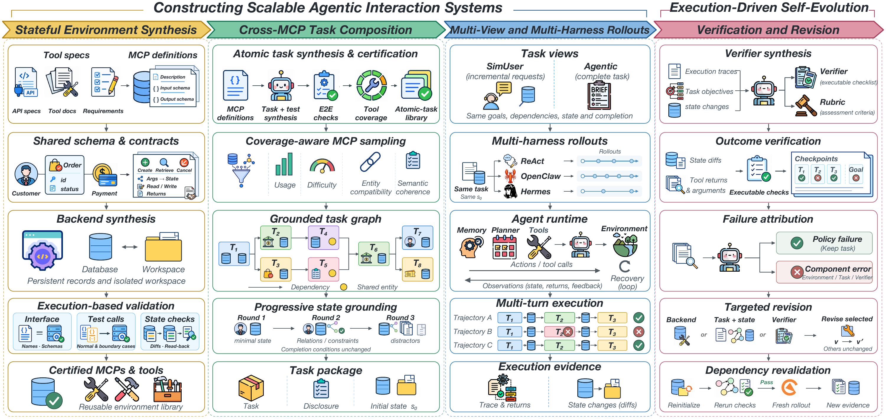
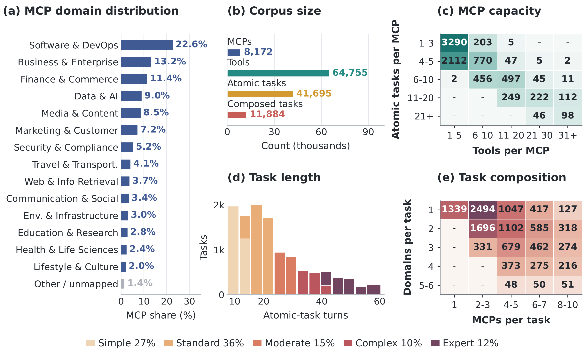
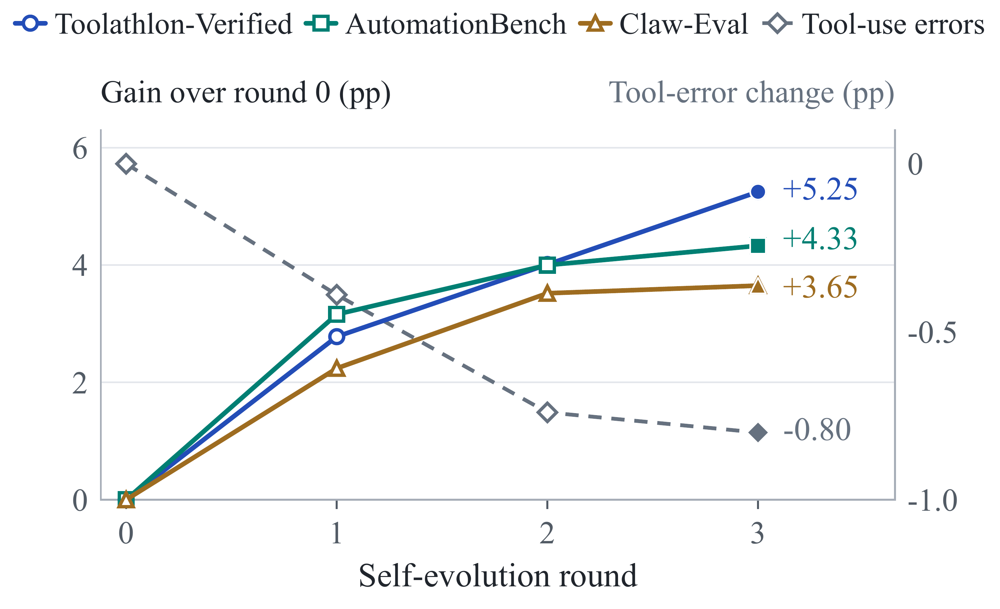
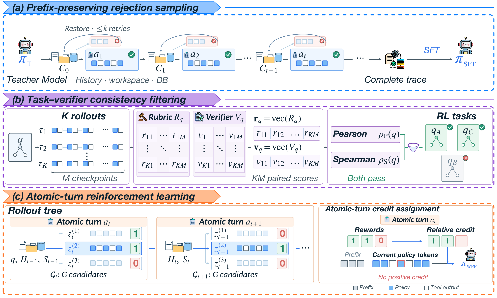
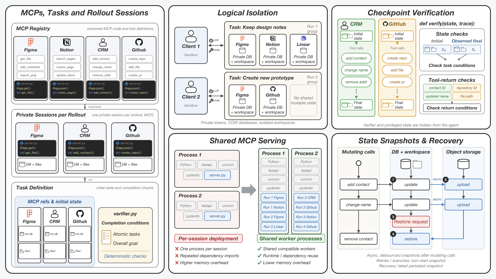
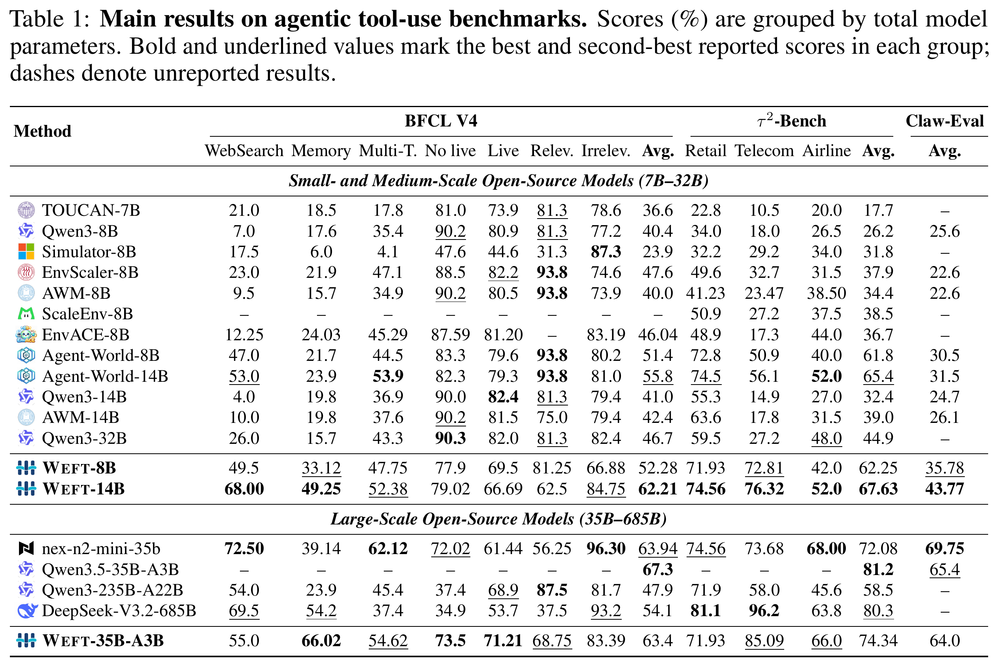

Environment breadth
Synthesize and execution-test tool environments with persistent database and workspace state.
Research paper / September 2026
WEFT builds diverse interactions, improves the system through execution feedback, and trains at verifiable task boundaries.
Useful tool-use training depends on environments, executable tasks, agent harnesses, and evaluators working together. WEFT scales, improves, and learns from this entire interaction system.
The WEFT framework
Explore the three stages
Build stateful environments and verifiable tasks, then route tasks through different interaction settings and harnesses.
Explore constructionAttribute failures, revise faulty components, and revalidate changes with fresh rollouts.
Explore self-evolutionPreserve successful prefixes, filter task–verifier pairs for consistency, and assign credit at atomic-task boundaries.
Explore trainingExecutable, verifiable tasks are hard to obtain. WEFT expands their training value through environment breadth, task complexity, and interaction diversity.

Synthesize and execution-test tool environments with persistent database and workspace state.
Compose certified atomic tasks into cross-MCP workflows: a median of 20 atomic-task turns, with more than half spanning multiple domains.
Present the same task as a complete brief (Agentic) or progressive requests from a simulated user (SimUser), then route it to multiple harnesses that retain their native execution behavior.

Failures can originate in the policy, environment, task, or verifier. WEFT uses traces and state changes to identify the cause: retain valid tasks, revise faulty components, and revalidate them with fresh rollouts.

Long workflows need reusable progress, reliable verifiers, and local rewards. WEFT organizes sampling and learning around atomic-task boundaries.

Retain verified prefixes and their database/workspace states; retry only the failed atomic task from its starting state.
Strict verifiers may reject correct solutions; loose ones may reward failures. Before RL, retain tasks whose executable scores agree with independent rubric judgments under both Pearson and Spearman checks. Online training uses executable rewards.
Sample candidates from identical histories and environment states. Compute advantages from the current atomic task’s binary reward, updating only that turn’s policy tokens.
The execution layer
Tool services are shared outside agent sandboxes; each rollout keeps a private database and workspace. Snapshots restore identical states for retries and branching.

We evaluate three base models across five benchmarks. WEFT-8B and WEFT-14B lead the evaluated same-size environment-scaling baselines on BFCL V4, τ²-Bench, and Claw-Eval aggregate scores.
WEFT-14B vs. Agent-World-14B

On longer workflows, WEFT-35B-A3B reaches 45.99% on Toolathlon-Verified and 26.50% on AutomationBench.
Continue reading
@misc{mao2026weftscalingtooluseposttraining,
title={WEFT: Scaling Tool-Use Post-Training for General-Purpose Agents},
author={Bo Mao and Hang He and Linting Wang and Lizhi Lin and Maosen Zhou and Guanming Liu and Jinxiu Liu and Tianyu Huai and Chaoyun Zhang and Bingxuan Li and Kepeng Lei and Guanting Dong and Zhou Shao and Rui Zheng and Hang Yan and Jie Zhou and Chengcheng Wan and Tao Gui and Liang He and Xipeng Qiu},
year={2026},
eprint={2609.36887},
archivePrefix={arXiv},
primaryClass={cs.AI},
url={https://arxiv.org/abs/2609.36887},
}